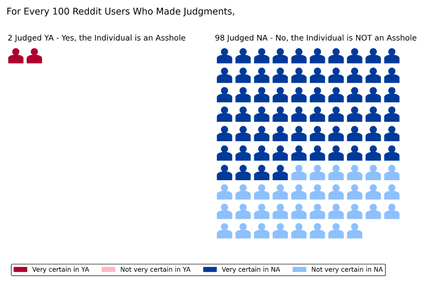
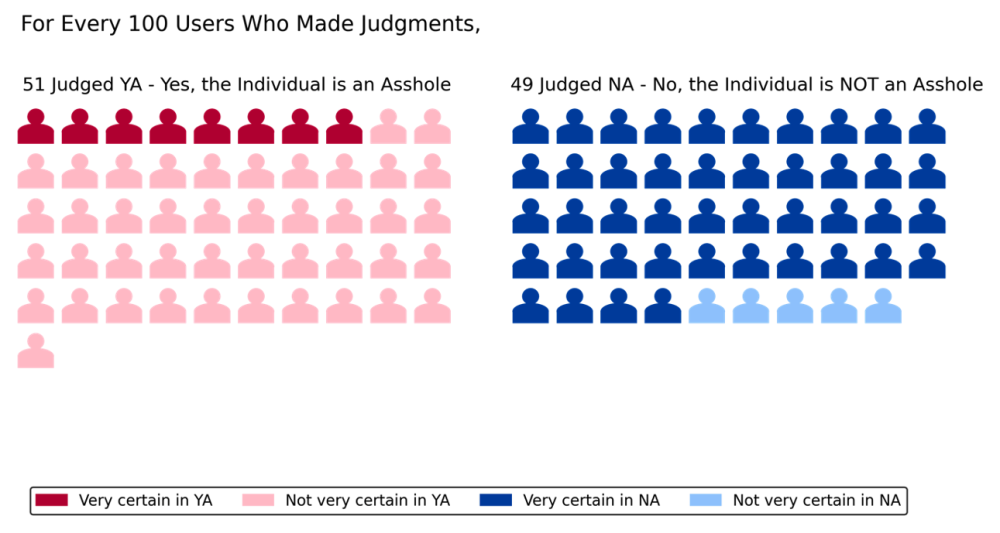

<div class="ms-5 me-5">
    <h1 class="bolded-blue" data-i18n="moral-page-1-2">###</h1>
    <h3 class="bolded-blue" data-i18n="moral-topic-understand-controversy-uncertainty">###</h1>
    
    <div class="container d-flex flex-column">
        <div class="pb-3 fs-5">
            <div>
                <span class="bolded-blue" data-i18n="moral-topic-what-is-reddit">###</span>
                &nbsp;
                <span class="bolded-blue ms-auto" data-i18n="moral-topic-reddit">###</span>
                <span class="ms-auto" data-i18n="moral-topic-what-is-reddit-ans">###</span>
            </div>
            <div>
                <span class="bolded-blue" data-i18n="moral-topic-what-is-aita">###</span>
                &nbsp;
                <span class="bolded-blue ms-auto" data-i18n="moral-topic-aita">###</span>
                <span class="ms-auto" data-i18n="moral-topic-what-is-aita-ans">###</span>
            </div>
    
            <div>
                <p class="bolded-blue" data-i18n="moral-topic-categorize-judgments">###</p>
                <p>
                    <span class="bolded-blue ms-auto" data-i18n="moral-topic-judgments-1">###</span>
                    {{#times 3}}
                        <span class="ms-auto" data-i18n="moral-topic-judgments-1-detail-{{this}}">###</span>
                        </br>
                    {{/times}}
                </p>
                <p>
                    <span class="bolded-blue ms-auto" data-i18n="moral-topic-judgments-2">###</span>
                    {{#times 3}}
                        <span class="ms-auto" data-i18n="moral-topic-judgments-2-detail-{{this}}">###</span>
                        </br>
                    {{/times}}
                </p>
            </div>
        </div>

        <div class="pb-3 fs-5">
            <div>
                <span data-i18n="moral-topic-reddit-controversy-uncertainty-summary">###</span>
            </div>

            <div class="pt-3">
                <p class="bolded-blue fs-5" data-i18n="moral-practice-skip"></p>
                <button type="button" class="btn btn-secondary me-auto" onclick="skipTraing()" data-i18n="moral-skip"></button>
            </div>
            <div class="p-3">
                <h3 class="bolded-blue" data-i18n="moral-topic-what-is-controversy">###</h3>
                <p>
                    <span class="bolded-blue ms-auto" data-i18n="moral-topic-controversy" >###</span>
                    <span class="ms-auto" data-i18n="moral-topic-what-is-controversy-ans">###</span>
                </p>
                <ul>
                    <li class="pb-1">
                        <u data-i18n="moral-topic-high-controversy">###</u>
                        <span data-i18n="moral-topic-high-controversy-explain">###</span>
                    </li>
                    <li>
                        <u data-i18n="moral-topic-low-controversy">###</u>
                        <span data-i18n="moral-topic-low-controversy-explain">###</span>
                    </li>
                </ul>
            </div>
            <div class="p-3">
                <h4 class="bolded-blue">
                    <span data-i18n="moral-topic-practice-question">###</span>
                    <span data-i18n="moral-topic-understand-controversy">###</span>
                </h4>
                
                <p data-i18n="moral-topic-practice-img-explain-controversy">###</p>
                <ul>
                    <li class="pb-1">
                        <span data-i18n="moral-topic-practice-img-explain-controversy-item1">###</span>
                    </li>
                    <li>
                        <span data-i18n="moral-topic-practice-img-explain-controversy-item2">###</span>
                    </li>
                </ul>
                <p class="bolded-blue" data-i18n="moral-topic-practice-question-controversy"></p>
                <div id="practice-question" class="p-2">
                    <div class="container d-flex flex-column">
                        <div class="pb-2">
                            <input type="radio" class="btn-check" name="practice" id="high-controversy" autocomplete="off">
                            <label class="btn btn-outline-secondary w-100" for="high-controversy" data-i18n="moral-topic-high-controversy" onclick="checkAnswer(0,0)">###</label>
                        </div>
                        <div>
                            <input type="radio" class="btn-check" name="practice" id="low-controversy" autocomplete="off">
                            <label class="btn btn-outline-secondary w-100" for="low-controversy" data-i18n="moral-topic-low-controversy" onclick="checkAnswer(1,0)">###</label>
                        </div>
                        <div class="invalid-feedback" id="invalid-feedback">Please answer the question</div>
                    </div>
                    <div class="pt-2">
                        <div class="collapse" id="correct">
                            <p class="survey1-paragraph-body mid-font bolded-blueer" data-i18n='moral-topic-practice-question-controversy-ans2-p1'>###</p>
                            <span class="survey1-paragraph-body mid-font bolded-blueer" data-i18n='moral-topic-practice-question-controversy-ans2-s1'>###</span>
                            <span class="survey1-paragraph-body mid-font" data-i18n='moral-topic-practice-question-controversy-ans2-s2'>###</span><br>
                        </div>
                        <div class="collapse" id="wrong">
                            <p class="survey1-paragraph-body mid-font bolded-blueer" data-i18n='moral-topic-practice-question-controversy-ans1-p1' >###</p>
                            <span class="survey1-paragraph-body mid-font bolded-blueer" data-i18n='moral-topic-practice-question-controversy-ans1-s1'>###</span>
                            <span class="survey1-paragraph-body mid-font" data-i18n='moral-topic-practice-question-controversy-ans1-s2'>###</span>
                            <span class="survey1-paragraph-body mid-font bolded-blueer" data-i18n='moral-topic-practice-question-controversy-ans1-s3'>###</span>
                            <span class="survey1-paragraph-body mid-font" data-i18n='moral-topic-practice-question-controversy-ans1-s4'>###</span>
                        </div>
                    </div>
                </div>
            </div>
        </div>

        <div class="pb-3 fs-5">
            <div>
                <span data-i18n="moral-topic-reddit-summary-1">###</span>
                <i data-i18n="moral-topic-reddit-summary-2">###</i>
                <span data-i18n="moral-topic-reddit-summary-3">###</span>
                <i data-i18n="moral-topic-reddit-summary-4">###</i>
                <span data-i18n="moral-topic-reddit-summary-5">###</span>
            </div>

            <div class="p-3">
                <h3 class="bolded-blue" data-i18n="moral-topic-what-is-uncertainty">###</h3>
                <p>
                    <span class="bolded-blue ms-auto" data-i18n="moral-topic-uncertainty" >###</span>
                    <span class="ms-auto" data-i18n="moral-topic-what-is-uncertainty-ans">###</span>
                </p>
                <ul>
                    <li class="pb-1">
                        <u data-i18n="moral-topic-high-uncertainty">###</u>
                        <span data-i18n="moral-topic-high-uncertainty-explain">###</span>
                    </li>
                    <li>
                        <u data-i18n="moral-topic-low-uncertainty">###</u>
                        <span data-i18n="moral-topic-low-uncertainty-explain">###</span>
                    </li>
                </ul>
            </div>

            <div class="p-3">
                <h4 class="bolded-blue">
                    <span data-i18n="moral-topic-practice-question">###</span>
                    <span data-i18n="moral-topic-understand-uncertainty">###</span>
                </h4>
                
                <p data-i18n="moral-topic-practice-img-explain-uncertainty">###</p>
                <ul>
                    <li class="pb-1">
                        <span data-i18n="moral-topic-practice-img-explain-uncertainty-item1">###</span>
                    </li>
                    <li>
                        <span data-i18n="moral-topic-practice-img-explain-uncertainty-item2">###</span>
                    </li>
                </ul>
                <p class="bolded-blue" data-i18n="moral-topic-practice-question-uncertainty"></p>
                <div id="practice-question-2" class="p-2">
                    <div class="container d-flex flex-column">
                        <div class="pb-2">
                            <input type="radio" class="btn-check" name="practice" id="high-uncertainty" autocomplete="off">
                            <label class="btn btn-outline-secondary w-100" for="high-uncertainty" data-i18n="moral-topic-high-uncertainty" onclick="checkAnswer(1,1)">###</label>
                        </div>
                        <div>
                            <input type="radio" class="btn-check" name="practice" id="low-uncertainty" autocomplete="off">
                            <label class="btn btn-outline-secondary w-100" for="low-uncertainty" data-i18n="moral-topic-low-uncertainty" onclick="checkAnswer(0,1)">###</label>
                        </div>
                        <div class="invalid-feedback" id="invalid-feedback-2">Please answer the question</div>
                    </div>
                    <div class="pt-2">
                        <div class="collapse" id="correct-2">
                            <p class="survey1-paragraph-body mid-font bolded-blueer" data-i18n='moral-topic-practice-question-uncertainty-ans-p1' >###</p>
                            <span class="survey1-paragraph-body mid-font bolded-blueer" data-i18n='moral-topic-practice-question-uncertainty-ans-s1'>###</span>
                            <span class="survey1-paragraph-body mid-font" data-i18n='moral-topic-practice-question-uncertainty-ans-s2'>###</span>
                        </div>
                        <div class="collapse" id="wrong-2">
                            <p class="survey1-paragraph-body mid-font bolded-blueer" data-i18n='moral-topic-practice-question-uncertainty-ans2-p1'>###</p>
                            <span class="survey1-paragraph-body mid-font bolded-blueer" data-i18n='moral-topic-practice-question-uncertainty-ans2-s1'>###</span>
                            <span class="survey1-paragraph-body mid-font" data-i18n='moral-topic-practice-question-uncertainty-ans2-s2'>###</span><br>
                            <span class="survey1-paragraph-body mid-font bolded-blueer" data-i18n='moral-topic-practice-question-uncertainty-ans2-s3'>###</span>
                            <span class="survey1-paragraph-body mid-font" data-i18n='moral-topic-practice-question-uncertainty-ans2-s4'>###</span>
                        </div>
                    </div>
                </div>
            </div>

        </div>
    </div>
            
    <button
        type="button"
        class="btn btn-secondary custom-btn-left me-auto"
        data-i18n="moral-next"
        onclick="tryNext()"
        >
        Next
    </button>
</div>
<script>
    let answer = 0;
    function checkAnswer(ans,id) {
        answer = ans;
        if (ans === 1) {
            if (id === 0) {
                $("#correct").show();
                $("#wrong").hide();
            }
            else if (id === 1) {
                $("#correct-2").show();
                $("#wrong-2").hide();
            }
        } else {
            if (id === 0) {
                $("#correct").hide();
                $("#wrong").show();
            }
            else if (id === 1) {
                $("#correct-2").hide();
                $("#wrong-2").show();
            }
        }
        $("#practice-question").removeClass("bg-warning-subtle");
        $("#invalid-feedback").hide();
    }
    function tryNext() {
        if (answer === 1) {
            nextPage();
        }
        else {
            $("#invalid-feedback").show();
            $("#practice-question").addClass("bg-warning-subtle");
        }
    }
    function skipTraing() {
        LITW.data.skipTraing = true;
        nextPage()
    }
</script>